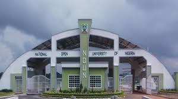

NOU Management Information System
NOUMIS

Studware is a Student Information System developed and supported by the Directorate of Management Information System of the National OPen University of Nigeria,NOUN,NOUMIS strategy is to ensure that study center across the Nation and even beyond are all in full possession and control of information regarding there student at any point in time.

08043140010